library(tidyverse)
library(scales)
library(ggrepel)
library(patchwork)12 Communication
You are reading the work-in-progress second edition of R for Data Science. This chapter is largely complete and just needs final proof reading. You can find the complete first edition at https://r4ds.had.co.nz.
12.1 Introduction
In sec-exploratory-data-analysis, you learned how to use plots as tools for exploration. When you make exploratory plots, you know—even before looking—which variables the plot will display. You made each plot for a purpose, could quickly look at it, and then move on to the next plot. In the course of most analyses, you’ll produce tens or hundreds of plots, most of which are immediately thrown away.
Now that you understand your data, you need to communicate your understanding to others. Your audience will likely not share your background knowledge and will not be deeply invested in the data. To help others quickly build up a good mental model of the data, you will need to invest considerable effort in making your plots as self-explanatory as possible. In this chapter, you’ll learn some of the tools that ggplot2 provides to do so.
This chapter focuses on the tools you need to create good graphics. We assume that you know what you want, and just need to know how to do it. For that reason, we highly recommend pairing this chapter with a good general visualization book. We particularly like The Truthful Art, by Albert Cairo. It doesn’t teach the mechanics of creating visualizations, but instead focuses on what you need to think about in order to create effective graphics.
12.1.1 Prerequisites
In this chapter, we’ll focus once again on ggplot2. We’ll also use a little dplyr for data manipulation, scales to override the default breaks, labels, transformations and palettes, and a few ggplot2 extension packages, including ggrepel (https://ggrepel.slowkow.com) by Kamil Slowikowski and patchwork (https://patchwork.data-imaginist.com) by Thomas Lin Pedersen. Don’t forget that you’ll need to install those packages with install.packages() if you don’t already have them.
12.2 Labels
The easiest place to start when turning an exploratory graphic into an expository graphic is with good labels. You add labels with the labs() function.
ggplot(mpg, aes(x = displ, y = hwy)) +
geom_point(aes(color = class)) +
geom_smooth(se = FALSE) +
labs(
x = "Engine displacement (L)",
y = "Highway fuel economy (mpg)",
color = "Car type",
title = "Fuel efficiency generally decreases with engine size",
subtitle = "Two seaters (sports cars) are an exception because of their light weight",
caption = "Data from fueleconomy.gov"
)![Scatterplot of highway fuel efficiency versus engine size of cars, where points are colored according to the car class. A smooth curve following the trajectory of the relationship between highway fuel efficiency versus engine size of cars is overlaid. The x-axis is labelled "Engine displacement (L)" and the y-axis is labelled "Highway fuel economy (mpg)". The legend is labelled "Car type". The plot is titled "Fuel efficiency generally decreases with engine size". The subtitle is "Two seaters (sports cars) are an exception because of their light weight" and the caption is "Data from fueleconomy.gov".](communication_files/figure-html/unnamed-chunk-3-1.png)
The purpose of a plot title is to summarize the main finding. Avoid titles that just describe what the plot is, e.g., “A scatterplot of engine displacement vs. fuel economy”.
If you need to add more text, there are two other useful labels: subtitle adds additional detail in a smaller font beneath the title and caption adds text at the bottom right of the plot, often used to describe the source of the data. You can also use labs() to replace the axis and legend titles. It’s usually a good idea to replace short variable names with more detailed descriptions, and to include the units.
It’s possible to use mathematical equations instead of text strings. Just switch "" out for quote() and read about the available options in ?plotmath:
df <- tibble(
x = 1:10,
y = cumsum(x^2)
)
ggplot(df, aes(x, y)) +
geom_point() +
labs(
x = quote(x[i]),
y = quote(sum(x[i] ^ 2, i == 1, n))
)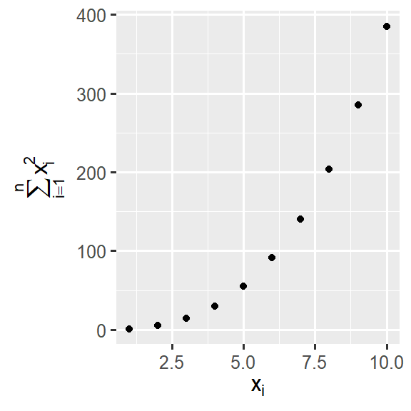
12.2.1 Exercises
Create one plot on the fuel economy data with customized
title,subtitle,caption,x,y, andcolorlabels.Recreate the following plot using the fuel economy data. Note that both the colors and shapes of points vary by type of drive train.
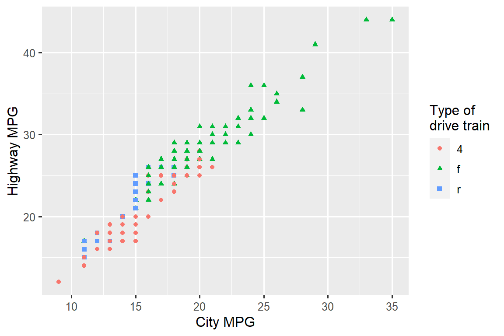
Take an exploratory graphic that you’ve created in the last month, and add informative titles to make it easier for others to understand.
12.3 Annotations
In addition to labelling major components of your plot, it’s often useful to label individual observations or groups of observations. The first tool you have at your disposal is geom_text(). geom_text() is similar to geom_point(), but it has an additional aesthetic: label. This makes it possible to add textual labels to your plots.
There are two possible sources of labels. First, you might have a tibble that provides labels. In the following plot we pull out the cars with the highest engine size in each drive type and save their information as a new data frame called label_info.
label_info <- mpg |>
group_by(drv) |>
arrange(desc(displ)) |>
slice_head(n = 1) |>
mutate(
drive_type = case_when(
drv == "f" ~ "front-wheel drive",
drv == "r" ~ "rear-wheel drive",
drv == "4" ~ "4-wheel drive"
)
) |>
select(displ, hwy, drv, drive_type)
label_info
#> # A tibble: 3 × 4
#> # Groups: drv [3]
#> displ hwy drv drive_type
#> <dbl> <int> <chr> <chr>
#> 1 6.5 17 4 4-wheel drive
#> 2 5.3 25 f front-wheel drive
#> 3 7 24 r rear-wheel driveThen, we use this new data frame to directly label the three groups to replace the legend with labels placed directly on the plot. Using the fontface and size arguments we can customize the look of the text labels. They’re larger than the rest of the text on the plot and bolded. (theme(legend.position = "none") turns all the legends off — we’ll talk about it more shortly.)
ggplot(mpg, aes(x = displ, y = hwy, color = drv)) +
geom_point(alpha = 0.3) +
geom_smooth(se = FALSE) +
geom_text(
data = label_info,
aes(x = displ, y = hwy, label = drive_type),
fontface = "bold", size = 5, hjust = "right", vjust = "bottom"
) +
theme(legend.position = "none")
#> `geom_smooth()` using method = 'loess' and formula = 'y ~ x'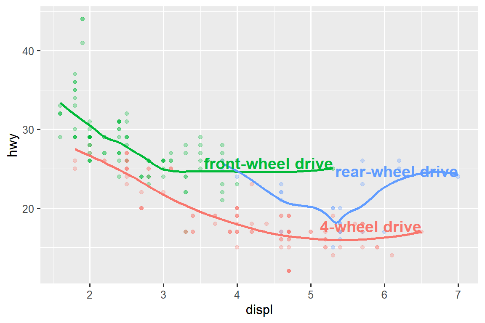
Note the use of hjust (horizontal justification) and vjust (vertical justification) to control the alignment of the label.
However the annotated plot we made above is hard to read because the labels overlap with each other, and with the points. We can use the geom_label_repel() function from the ggrepel package to address both of these issues. This useful package will automatically adjust labels so that they don’t overlap:
ggplot(mpg, aes(x = displ, y = hwy, color = drv)) +
geom_point(alpha = 0.3) +
geom_smooth(se = FALSE) +
geom_label_repel(
data = label_info,
aes(x = displ, y = hwy, label = drive_type),
fontface = "bold", size = 5, nudge_y = 2
) +
theme(legend.position = "none")
#> `geom_smooth()` using method = 'loess' and formula = 'y ~ x'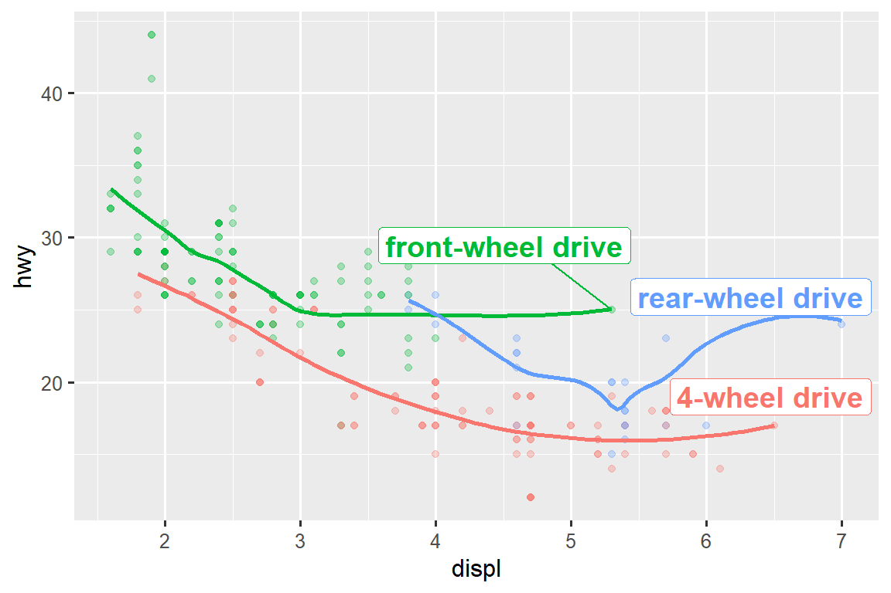
You can also use the same idea to highlight certain points on a plot with geom_text_repel() from the ggrepel package. Note another handy technique used here: we added a second layer of large, hollow points to further highlight the labelled points.
potential_outliers <- mpg |>
filter(hwy > 40 | (hwy > 20 & displ > 5))
ggplot(mpg, aes(x = displ, y = hwy)) +
geom_point() +
geom_text_repel(data = potential_outliers, aes(label = model)) +
geom_point(data = potential_outliers, color = "red") +
geom_point(
data = potential_outliers,
color = "red", size = 3, shape = "circle open"
)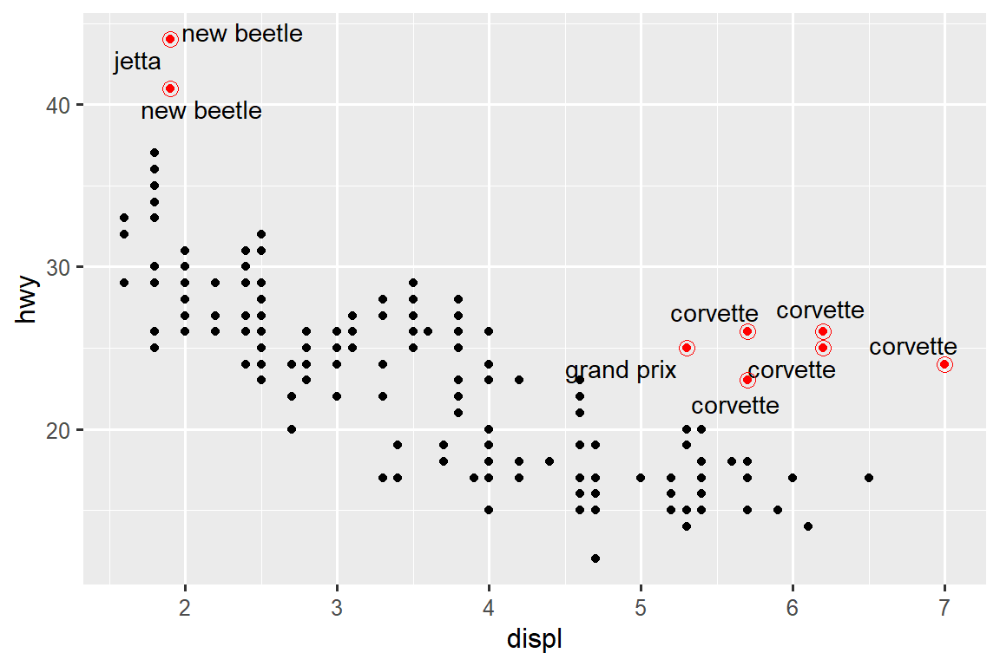
Remember, in addition to geom_text() and geom_label(), you have many other geoms in ggplot2 available to help annotate your plot. A couple ideas:
Use
geom_hline()andgeom_vline()to add reference lines. We often make them thick (linewidth = 2) and white (color = white), and draw them underneath the primary data layer. That makes them easy to see, without drawing attention away from the data.Use
geom_rect()to draw a rectangle around points of interest. The boundaries of the rectangle are defined by aestheticsxmin,xmax,ymin,ymax. Alternatively, look into the ggforce package, specificallygeom_mark_hull(), which allows you to annotate subsets of points with hulls.Use
geom_segment()with thearrowargument to draw attention to a point with an arrow. Use aestheticsxandyto define the starting location, andxendandyendto define the end location.
Another handy function for adding annotations to plots is annotate(). As a rule of thumb, geoms are generally useful for highlighting a subset of the data while annotate() is useful for adding one or few annotation elements to a plot.
To demonstrate using annotate(), let’s create some text to add to our plot. The text is a bit long, so we’ll use stringr::str_wrap() to automatically add line breaks to it given the number of characters you want per line:
trend_text <- "Larger engine sizes tend to have lower fuel economy." |>
str_wrap(width = 30)
trend_text
#> [1] "Larger engine sizes tend to\nhave lower fuel economy."Then, we add two layers of annotation: one with a label geom and the other with a segment geom. The x and y aesthetics in both define where the annotation should start, and the xend and yend aesthetics in the segment annotation define the end location of the segment. Note also that the segment is styled as an arrow.
ggplot(mpg, aes(x = displ, y = hwy)) +
geom_point() +
annotate(
geom = "label", x = 3.5, y = 38,
label = trend_text,
hjust = "left", color = "red"
) +
annotate(
geom = "segment",
x = 3, y = 35, xend = 5, yend = 25, color = "red",
arrow = arrow(type = "closed")
)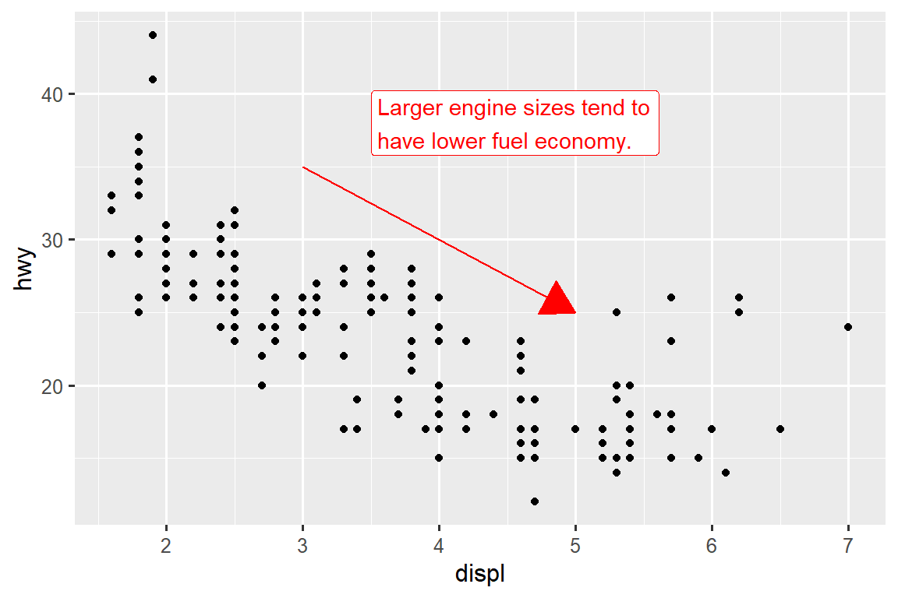
Annotation is a powerful tool for communicating main takeaways and interesting features of your visualizations. The only limit is your imagination (and your patience with positioning annotations to be aesthetically pleasing)!
12.3.1 Exercises
Use
geom_text()with infinite positions to place text at the four corners of the plot.Use
annotate()to add a point geom in the middle of your last plot without having to create a tibble. Customize the shape, size, or color of the point.How do labels with
geom_text()interact with faceting? How can you add a label to a single facet? How can you put a different label in each facet? (Hint: Think about the dataset that is being passed togeom_text().)What arguments to
geom_label()control the appearance of the background box?What are the four arguments to
arrow()? How do they work? Create a series of plots that demonstrate the most important options.
12.4 Scales
The third way you can make your plot better for communication is to adjust the scales. Scales control how the aesthetic mappings manifest visually.
12.4.1 Default scales
Normally, ggplot2 automatically adds scales for you. For example, when you type:
ggplot(mpg, aes(x = displ, y = hwy)) +
geom_point(aes(color = class))ggplot2 automatically adds default scales behind the scenes:
ggplot(mpg, aes(x = displ, y = hwy)) +
geom_point(aes(color = class)) +
scale_x_continuous() +
scale_y_continuous() +
scale_color_discrete()Note the naming scheme for scales: scale_ followed by the name of the aesthetic, then _, then the name of the scale. The default scales are named according to the type of variable they align with: continuous, discrete, datetime, or date. scale_x_continuous() puts the numeric values from displ on a continuous number line on the x-axis, scale_color_discrete() chooses colors for each of the class of car, etc. There are lots of non-default scales which you’ll learn about below.
The default scales have been carefully chosen to do a good job for a wide range of inputs. Nevertheless, you might want to override the defaults for two reasons:
You might want to tweak some of the parameters of the default scale. This allows you to do things like change the breaks on the axes, or the key labels on the legend.
You might want to replace the scale altogether, and use a completely different algorithm. Often you can do better than the default because you know more about the data.
12.4.2 Axis ticks and legend keys
Collectively axes and legends are called guides. Axes are used for x and y aesthetics; legends are used for everything else.
There are two primary arguments that affect the appearance of the ticks on the axes and the keys on the legend: breaks and labels. Breaks controls the position of the ticks, or the values associated with the keys. Labels controls the text label associated with each tick/key. The most common use of breaks is to override the default choice:
ggplot(mpg, aes(x = displ, y = hwy, color = drv)) +
geom_point() +
scale_y_continuous(breaks = seq(15, 40, by = 5)) 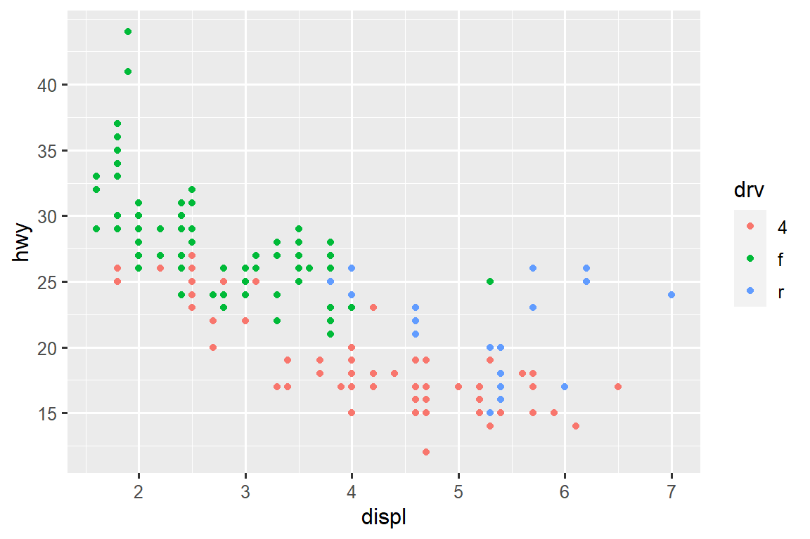
You can use labels in the same way (a character vector the same length as breaks), but you can also set it to NULL to suppress the labels altogether. This can be useful for maps, or for publishing plots where you can’t share the absolute numbers. You can also use breaks and labels to control the appearance of legends. For discrete scales for categorical variables, labels can be a named list of the existing levels names and the desired labels for them.
ggplot(mpg, aes(x = displ, y = hwy, color = drv)) +
geom_point() +
scale_x_continuous(labels = NULL) +
scale_y_continuous(labels = NULL) +
scale_color_discrete(labels = c("4" = "4-wheel", "f" = "front", "r" = "rear"))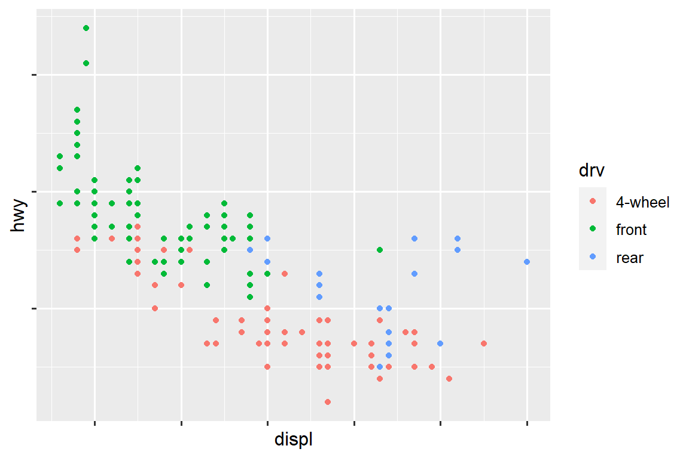
The labels argument coupled with labelling functions from the scales package is also useful for formatting numbers as currency, percent, etc. The plot on the left shows default labelling with label_dollar(), which adds a dollar sign as well as a thousand separator comma. The plot on the right adds further customization by dividing dollar values by 1,000 and adding a suffix “K” (for “thousands”) as well as adding custom breaks. Note that breaks is in the original scale of the data.
# Left
ggplot(diamonds, aes(x = price, y = cut)) +
geom_boxplot(alpha = 0.05) +
scale_x_continuous(labels = label_dollar())
# Right
ggplot(diamonds, aes(x = price, y = cut)) +
geom_boxplot(alpha = 0.05) +
scale_x_continuous(
labels = label_dollar(scale = 1/1000, suffix = "K"),
breaks = seq(1000, 19000, by = 6000)
)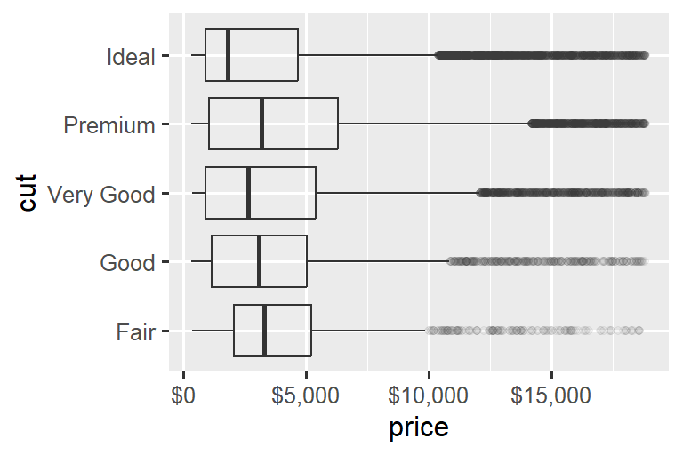
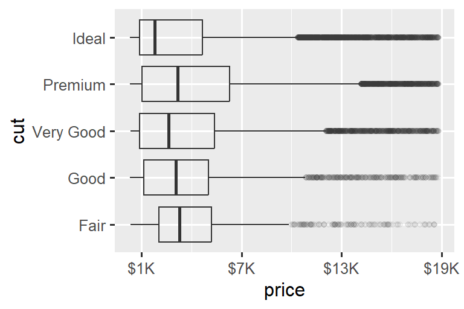
Another handy label function is label_percent():
ggplot(diamonds, aes(x = cut, fill = clarity)) +
geom_bar(position = "fill") +
scale_y_continuous(name = "Percentage", labels = label_percent())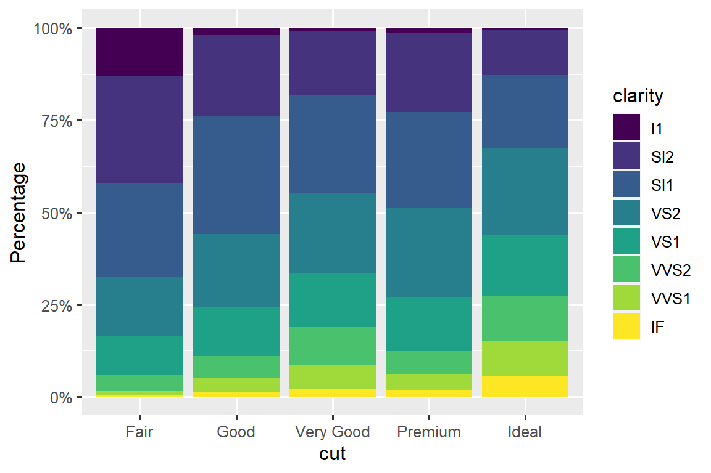
Another use of breaks is when you have relatively few data points and want to highlight exactly where the observations occur. For example, take this plot that shows when each US president started and ended their term.
presidential |>
mutate(id = 33 + row_number()) |>
ggplot(aes(x = start, y = id)) +
geom_point() +
geom_segment(aes(xend = end, yend = id)) +
scale_x_date(name = NULL, breaks = presidential$start, date_labels = "'%y")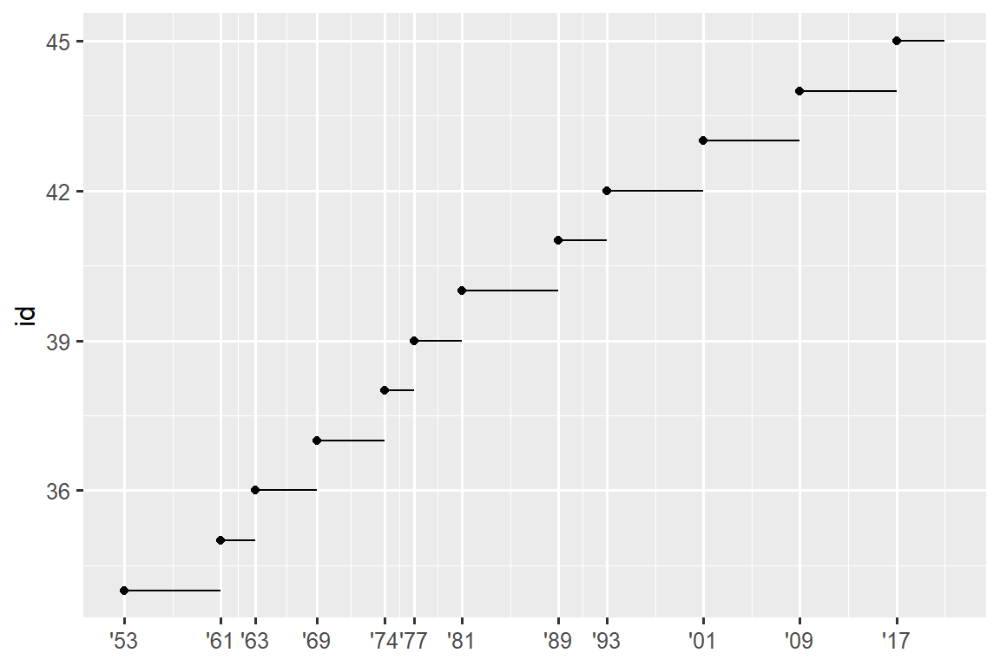
Note that for the breaks argument we pulled out the start variable as a vector with presidential$start because we can’t do an aesthetic mapping for this argument. Also note that the specification of breaks and labels for date and datetime scales is a little different:
date_labelstakes a format specification, in the same form asparse_datetime().date_breaks(not shown here), takes a string like “2 days” or “1 month”.
12.4.3 Legend layout
You will most often use breaks and labels to tweak the axes. While they both also work for legends, there are a few other techniques you are more likely to use.
To control the overall position of the legend, you need to use a theme() setting. We’ll come back to themes at the end of the chapter, but in brief, they control the non-data parts of the plot. The theme setting legend.position controls where the legend is drawn:
base <- ggplot(mpg, aes(x = displ, y = hwy)) +
geom_point(aes(color = class))
base + theme(legend.position = "right") # the default
base + theme(legend.position = "left")
base +
theme(legend.position = "top") +
guides(color = guide_legend(nrow = 3))
base +
theme(legend.position = "bottom") +
guides(color = guide_legend(nrow = 3))
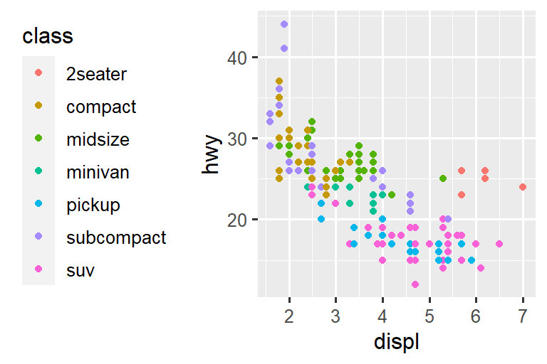
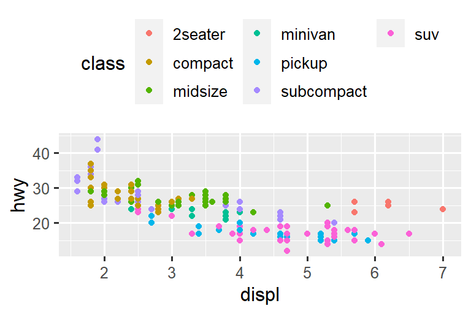
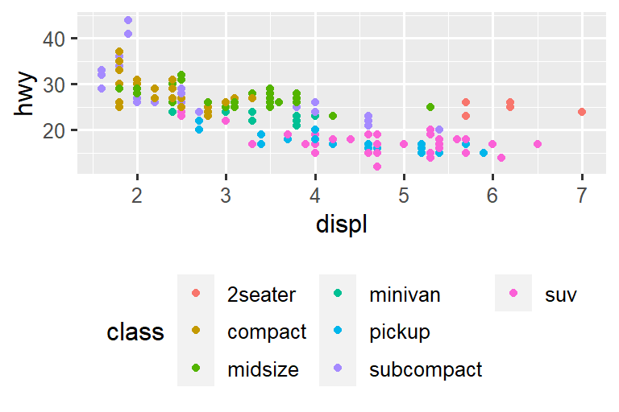
If your plot is short and wide, place the legend at the legend at the top or bottom, and if it’s tall and narrow, place the legend at the left or right. You can also use legend.position = "none" to suppress the display of the legend altogether.
To control the display of individual legends, use guides() along with guide_legend() or guide_colorbar(). The following example shows two important settings: controlling the number of rows the legend uses with nrow, and overriding one of the aesthetics to make the points bigger. This is particularly useful if you have used a low alpha to display many points on a plot.
ggplot(mpg, aes(x = displ, y = hwy)) +
geom_point(aes(color = class)) +
geom_smooth(se = FALSE) +
theme(legend.position = "bottom") +
guides(color = guide_legend(nrow = 2, override.aes = list(size = 4)))
#> `geom_smooth()` using method = 'loess' and formula = 'y ~ x'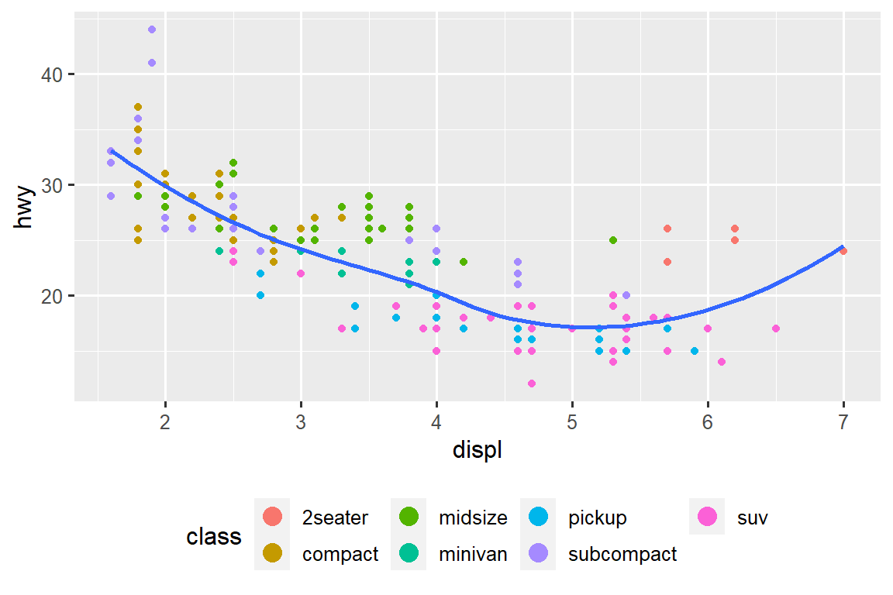
Note that the name of the argument in guides() matches the name of the aesthetic, just like in labs().
12.4.4 Replacing a scale
Instead of just tweaking the details a little, you can instead replace the scale altogether. There are two types of scales you’re mostly likely to want to switch out: continuous position scales and color scales. Fortunately, the same principles apply to all the other aesthetics, so once you’ve mastered position and color, you’ll be able to quickly pick up other scale replacements.
It’s very useful to plot transformations of your variable. For example, it’s easier to see the precise relationship between carat and price if we log transform them:
# Left
ggplot(diamonds, aes(x = carat, y = price)) +
geom_bin2d()
# Right
ggplot(diamonds, aes(x = log10(carat), y = log10(price))) +
geom_bin2d()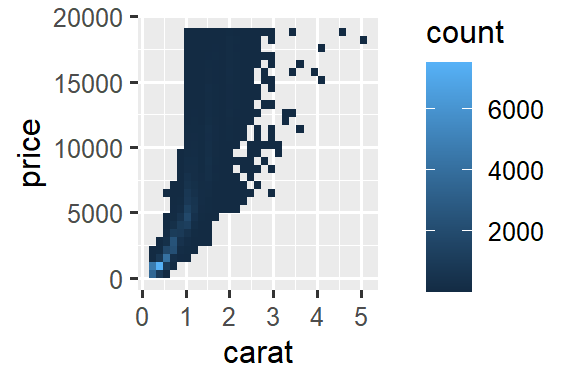
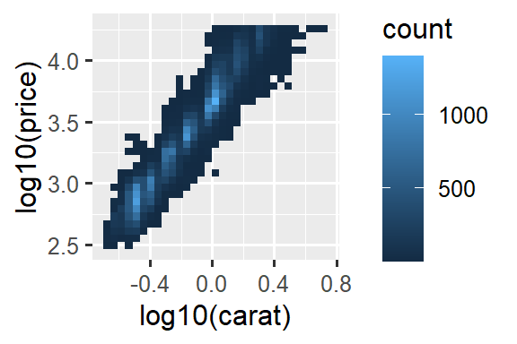
However, the disadvantage of this transformation is that the axes are now labelled with the transformed values, making it hard to interpret the plot. Instead of doing the transformation in the aesthetic mapping, we can instead do it with the scale. This is visually identical, except the axes are labelled on the original data scale.
ggplot(diamonds, aes(x = carat, y = price)) +
geom_bin2d() +
scale_x_log10() +
scale_y_log10()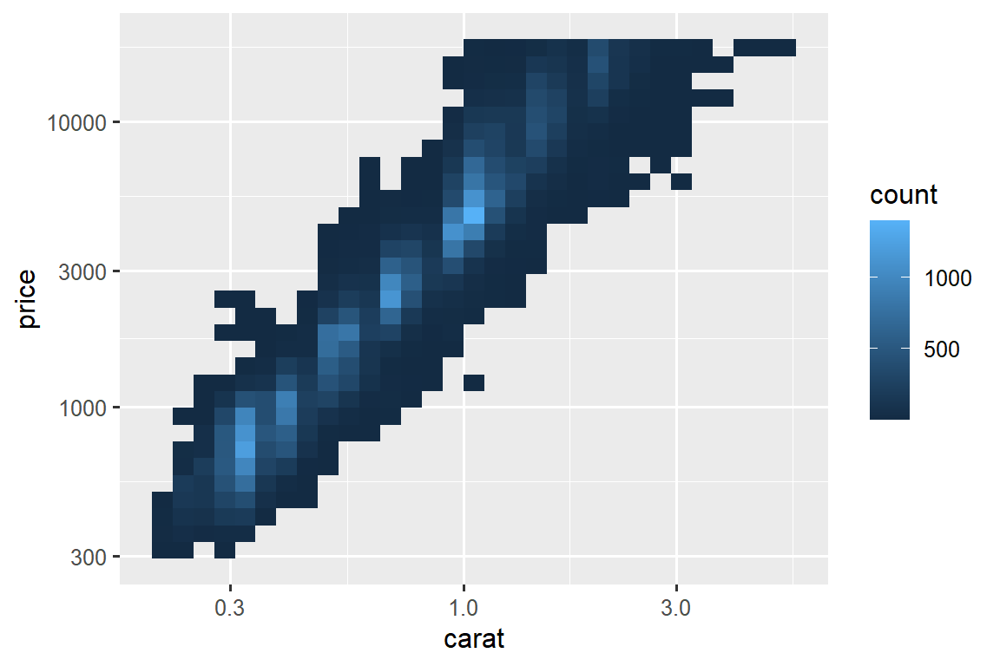
Another scale that is frequently customized is color. The default categorical scale picks colors that are evenly spaced around the color wheel. Useful alternatives are the ColorBrewer scales which have been hand tuned to work better for people with common types of color blindness. The two plots below look similar, but there is enough difference in the shades of red and green that the dots on the right can be distinguished even by people with red-green color blindness.1
ggplot(mpg, aes(x = displ, y = hwy)) +
geom_point(aes(color = drv))
ggplot(mpg, aes(x = displ, y = hwy)) +
geom_point(aes(color = drv)) +
scale_color_brewer(palette = "Set1")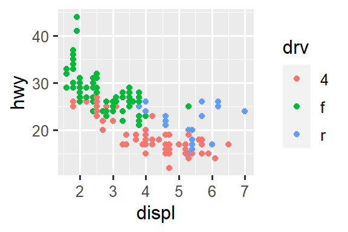
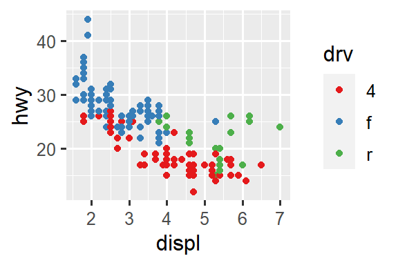
Don’t forget simpler techniques for improving accessibility. If there are just a few colors, you can add a redundant shape mapping. This will also help ensure your plot is interpretable in black and white.
ggplot(mpg, aes(x = displ, y = hwy)) +
geom_point(aes(color = drv, shape = drv)) +
scale_color_brewer(palette = "Set1")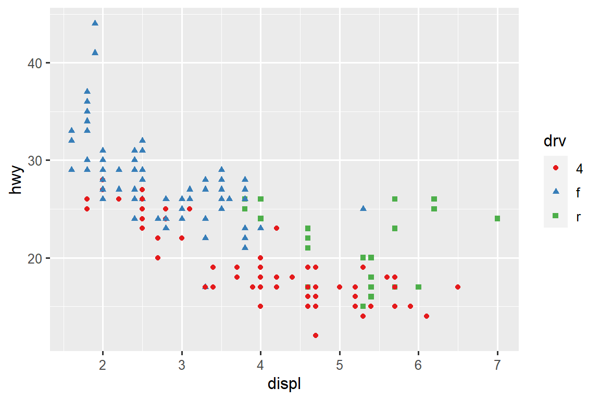
The ColorBrewer scales are documented online at https://colorbrewer2.org/ and made available in R via the RColorBrewer package, by Erich Neuwirth. Figure fig-brewer shows the complete list of all palettes. The sequential (top) and diverging (bottom) palettes are particularly useful if your categorical values are ordered, or have a “middle”. This often arises if you’ve used cut() to make a continuous variable into a categorical variable.
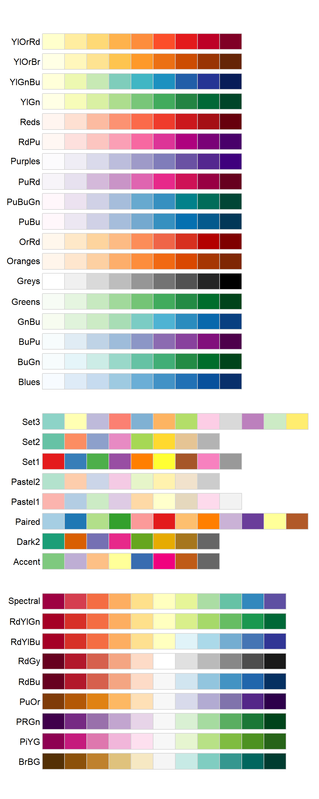
When you have a predefined mapping between values and colors, use scale_color_manual(). For example, if we map presidential party to color, we want to use the standard mapping of red for Republicans and blue for Democrats. One approach for assigning these colors is using hex color codes:
presidential |>
mutate(id = 33 + row_number()) |>
ggplot(aes(x = start, y = id, color = party)) +
geom_point() +
geom_segment(aes(xend = end, yend = id)) +
scale_color_manual(values = c(Republican = "#E81B23", Democratic = "#00AEF3"))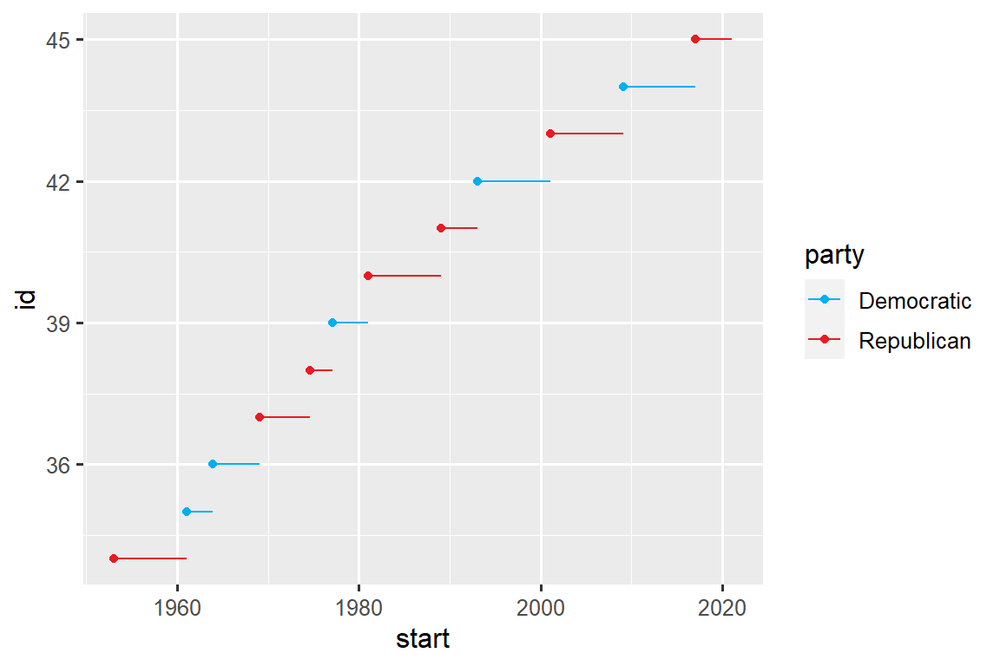
For continuous color, you can use the built-in scale_color_gradient() or scale_fill_gradient(). If you have a diverging scale, you can use scale_color_gradient2(). That allows you to give, for example, positive and negative values different colors. That’s sometimes also useful if you want to distinguish points above or below the mean.
Another option is to use the viridis color scales. The designers, Nathaniel Smith and Stéfan van der Walt, carefully tailored continuous color schemes that are perceptible to people with various forms of color blindness as well as perceptually uniform in both color and black and white. These scales are available as continuous (c), discrete (d), and binned (b) palettes in ggplot2.
df <- tibble(
x = rnorm(10000),
y = rnorm(10000)
)
ggplot(df, aes(x, y)) +
geom_hex() +
coord_fixed() +
labs(title = "Default, continuous", x = NULL, y = NULL)
#> Warning: Computation failed in `stat_binhex()`
#> Caused by error in `compute_group()`:
#> ! The package "hexbin" is required for `stat_binhex()`
ggplot(df, aes(x, y)) +
geom_hex() +
coord_fixed() +
scale_fill_viridis_c() +
labs(title = "Viridis, continuous", x = NULL, y = NULL)
#> Warning: Computation failed in `stat_binhex()`
#> Caused by error in `compute_group()`:
#> ! The package "hexbin" is required for `stat_binhex()`
ggplot(df, aes(x, y)) +
geom_hex() +
coord_fixed() +
scale_fill_viridis_b() +
labs(title = "Viridis, binned", x = NULL, y = NULL)
#> Warning: Computation failed in `stat_binhex()`
#> Caused by error in `compute_group()`:
#> ! The package "hexbin" is required for `stat_binhex()`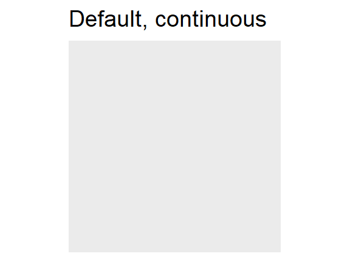
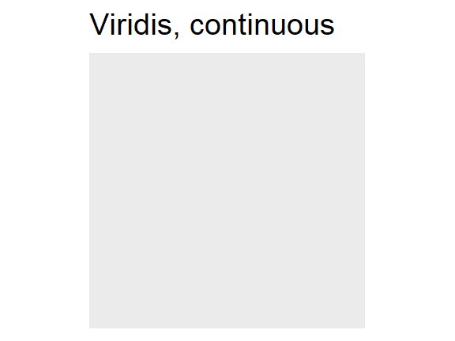
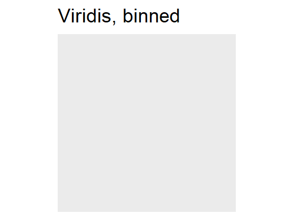
Note that all color scales come in two varieties: scale_color_*() and scale_fill_*() for the color and fill aesthetics respectively (the color scales are available in both UK and US spellings).
12.4.5 Zooming
There are three ways to control the plot limits:
- Adjusting what data are plotted.
- Setting the limits in each scale.
- Setting
xlimandylimincoord_cartesian().
We’ll demonstrate these options in a series of plots. The plot on the left shows the relationship between engine size and fuel efficiency, colored by type of drive train. The plot on the right shows the same variables, but subsets the data that are plotted. Subsetting the data has affected the x and y scales as well as the smooth curve.
# Left
ggplot(mpg, aes(x = displ, y = hwy)) +
geom_point(aes(color = drv)) +
geom_smooth()
# Right
mpg |>
filter(displ >= 5 & displ <= 6 & hwy >= 10 & hwy <= 25) |>
ggplot(aes(x = displ, y = hwy)) +
geom_point(aes(color = drv)) +
geom_smooth()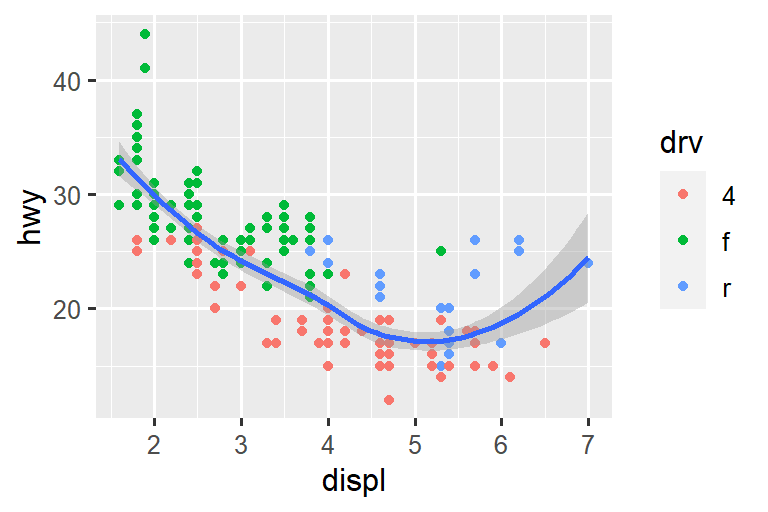
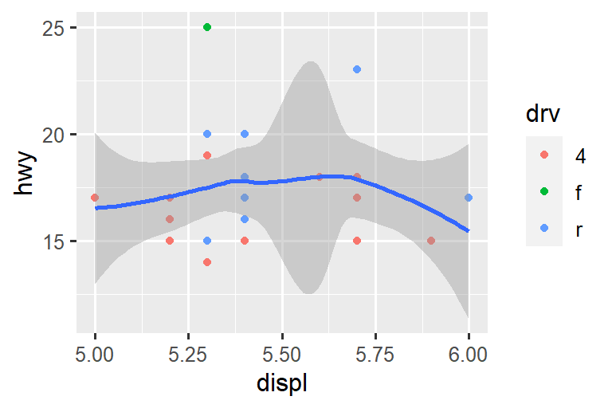
Let’s compare these to the two plots below where the plot on the left sets the limits on individual scales and the plot on the right sets them in coord_cartesian(). We can see that reducing the limits is equivalent to subsetting the data. Therefore, to zoom in on a region of the plot, it’s generally best to use coord_cartesian().
# Left
ggplot(mpg, aes(x = displ, y = hwy)) +
geom_point(aes(color = drv)) +
geom_smooth() +
scale_x_continuous(limits = c(5, 6)) +
scale_y_continuous(limits = c(10, 25))
# Right
ggplot(mpg, aes(x = displ, y = hwy)) +
geom_point(aes(color = drv)) +
geom_smooth() +
coord_cartesian(xlim = c(5, 6), ylim = c(10, 25))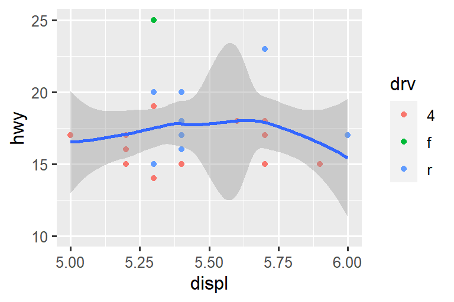
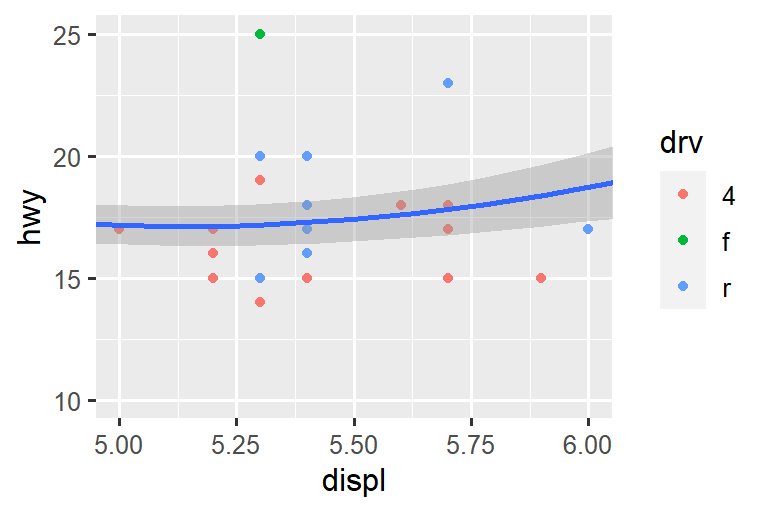
On the other hand, setting the limits on individual scales is generally more useful if you want to expand the limits, e.g., to match scales across different plots. For example, if we extract two classes of cars and plot them separately, it’s difficult to compare the plots because all three scales (the x-axis, the y-axis, and the color aesthetic) have different ranges.
suv <- mpg |> filter(class == "suv")
compact <- mpg |> filter(class == "compact")
# Left
ggplot(suv, aes(x = displ, y = hwy, color = drv)) +
geom_point()
# Right
ggplot(compact, aes(x = displ, y = hwy, color = drv)) +
geom_point()![On the left, a scatterplot of highway mileage vs. displacement of SUVs. On the right, a scatterplot of the same variables for compact cars. Points are colored by drive type for both plots. Among SUVs more of the cars are 4-wheel drive and the others are rear-wheel drive, while among compact cars more of the cars are front-wheel drive and the others are 4-wheel drive. SUV plot shows a clear negative relationship between higway mileage and displacement while in the compact cars plot the relationship is much flatter.](communication_files/figure-html/unnamed-chunk-30-1.png)
![On the left, a scatterplot of highway mileage vs. displacement of SUVs. On the right, a scatterplot of the same variables for compact cars. Points are colored by drive type for both plots. Among SUVs more of the cars are 4-wheel drive and the others are rear-wheel drive, while among compact cars more of the cars are front-wheel drive and the others are 4-wheel drive. SUV plot shows a clear negative relationship between higway mileage and displacement while in the compact cars plot the relationship is much flatter.](communication_files/figure-html/unnamed-chunk-30-2.png)
One way to overcome this problem is to share scales across multiple plots, training the scales with the limits of the full data.
x_scale <- scale_x_continuous(limits = range(mpg$displ))
y_scale <- scale_y_continuous(limits = range(mpg$hwy))
col_scale <- scale_color_discrete(limits = unique(mpg$drv))
# Left
ggplot(suv, aes(x = displ, y = hwy, color = drv)) +
geom_point() +
x_scale +
y_scale +
col_scale
# Right
ggplot(compact, aes(x = displ, y = hwy, color = drv)) +
geom_point() +
x_scale +
y_scale +
col_scale![On the left, a scatterplot of highway mileage vs. displacement of SUVs. On the right, a scatterplot of the same variables for compact cars. Points are colored by drive type for both plots. Both plots are plotted on the same scale for highway mileage, displacement, and drive type, resulting in the legend showing all three types (front, rear, and 4-wheel drive) for both plots even though there are no front-wheel drive SUVs and no rear-wheel drive compact cars. Since the x and y scales are the same, and go well beyond minimum or maximum highway mileage and displacement, the points do not take up the entire plotting area.](communication_files/figure-html/unnamed-chunk-31-1.png)
![On the left, a scatterplot of highway mileage vs. displacement of SUVs. On the right, a scatterplot of the same variables for compact cars. Points are colored by drive type for both plots. Both plots are plotted on the same scale for highway mileage, displacement, and drive type, resulting in the legend showing all three types (front, rear, and 4-wheel drive) for both plots even though there are no front-wheel drive SUVs and no rear-wheel drive compact cars. Since the x and y scales are the same, and go well beyond minimum or maximum highway mileage and displacement, the points do not take up the entire plotting area.](communication_files/figure-html/unnamed-chunk-31-2.png)
In this particular case, you could have simply used faceting, but this technique is useful more generally, if for instance, you want to spread plots over multiple pages of a report.
12.4.6 Exercises
Why doesn’t the following code override the default scale?
df <- tibble( x = rnorm(10000), y = rnorm(10000) ) ggplot(df, aes(x, y)) + geom_hex() + scale_color_gradient(low = "white", high = "red") + coord_fixed() #> Warning: Computation failed in `stat_binhex()` #> Caused by error in `compute_group()`: #> ! The package "hexbin" is required for `stat_binhex()`What is the first argument to every scale? How does it compare to
labs()?Change the display of the presidential terms by:
- Combining the two variants that customize colors and x axis breaks.
- Improving the display of the y axis.
- Labelling each term with the name of the president.
- Adding informative plot labels.
- Placing breaks every 4 years (this is trickier than it seems!).
First, create the following plot. Then, modify the code using
override.aesto make the legend easier to see.ggplot(diamonds, aes(x = carat, y = price)) + geom_point(aes(color = cut), alpha = 1/20)
12.5 Themes
Finally, you can customize the non-data elements of your plot with a theme:
ggplot(mpg, aes(x = displ, y = hwy)) +
geom_point(aes(color = class)) +
geom_smooth(se = FALSE) +
theme_bw()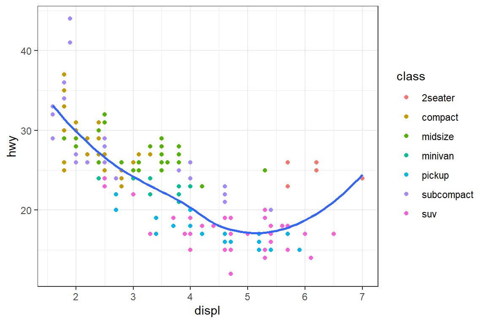
ggplot2 includes the eight themes shown in Figure fig-themes, with theme_gray() as the default.2 Many more are included in add-on packages like ggthemes (https://jrnold.github.io/ggthemes), by Jeffrey Arnold. You can also create your own themes, if you are trying to match a particular corporate or journal style.

It’s also possible to control individual components of each theme, like the size and color of the font used for the y axis. We’ve already seen that legend.position controls where the legend is drawn. There are many other aspects of the legend that can be customized with theme(). For example, in the plot below we change the direction of the legend as well as put a black border around it. Note that customization of the legend box and plot title elements of the theme are done with element_*() functions. These functions specify the styling of non-data components, e.g., the title text is bolded in the face argument of element_text() and the legend border color is defined in the color argument of element_rect(). The theme elements that control the position of the title and the caption are plot.title.position and plot.caption.position, respectively. In the following plot these are set to "plot" to indicate these elements are aligned to the entire plot area, instead of the plot panel (the default). A few other helpful theme() components are used to change the placement for format of the title and caption text.
ggplot(mpg, aes(x = displ, y = hwy, color = drv)) +
geom_point() +
labs(
title = "Larger engine sizes tend to have lower fuel economy",
caption = "Source: https://fueleconomy.gov."
) +
theme(
legend.position = c(0.6, 0.7),
legend.direction = "horizontal",
legend.box.background = element_rect(color = "black"),
plot.title = element_text(face = "bold"),
plot.title.position = "plot",
plot.caption.position = "plot",
plot.caption = element_text(hjust = 0)
)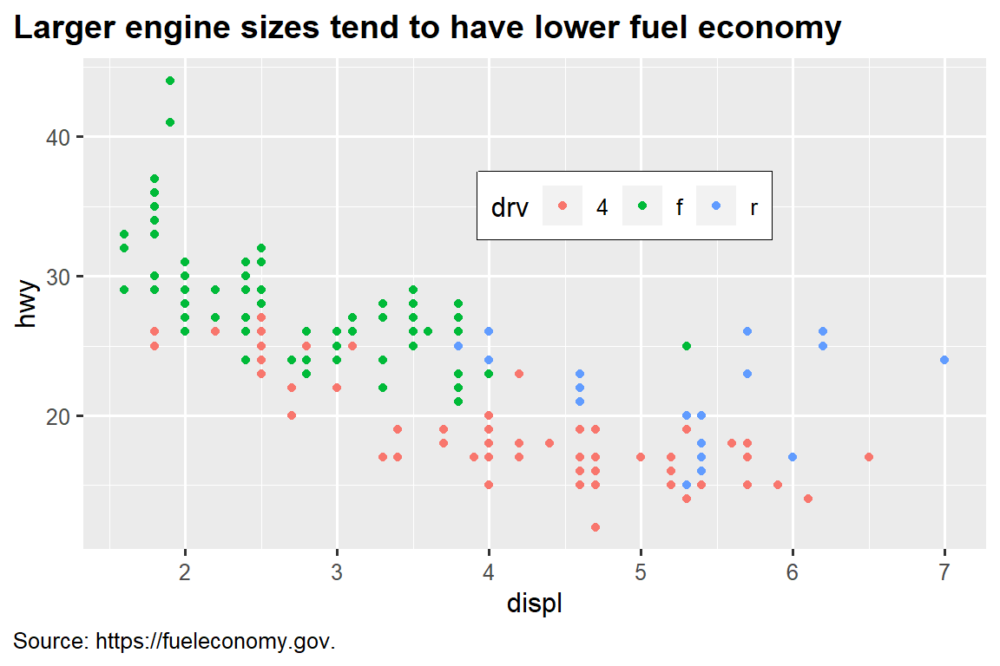
For an overview of all theme() components, see help with ?theme. The ggplot2 book is also a great place to go for the full details on theming.
12.5.1 Exercises
- Pick a theme offered by the ggthemes package and apply it to the last plot you made.
- Make the axis labels of your plot blue and bolded.
12.6 Layout
So far we talked about how to create and modify a single plot. What if you have multiple plots you want to lay out in a certain way? The patchwork package allows you to combine separate plots into the same graphic. We loaded this package earlier in the chapter.
To place two plots next to each other, you can simply add them to each other. Note that you first need to create the plots and save them as objects (in the following example they’re called p1 and p2). Then, you place them next to each other with +.
p1 <- ggplot(mpg, aes(x = displ, y = hwy)) +
geom_point() +
labs(title = "Plot 1")
p2 <- ggplot(mpg, aes(x = drv, y = hwy)) +
geom_boxplot() +
labs(title = "Plot 2")
p1 + p2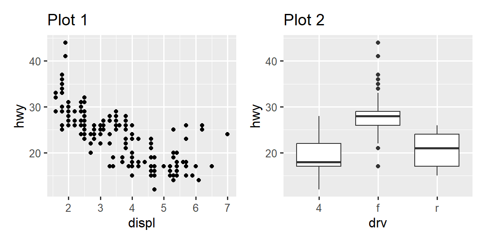
It’s important to note that in the above code chunk we did not use a new function from the patchwork package. Instead, the package added a new functionality to the + operator.
You can also create complex plot layouts with patchwork. In the following, | places the p1 and p3 next to each other and / moves p2 to the next line.
p3 <- ggplot(mpg, aes(x = cty, y = hwy)) +
geom_point() +
labs(title = "Plot 3")
(p1 | p3) / p2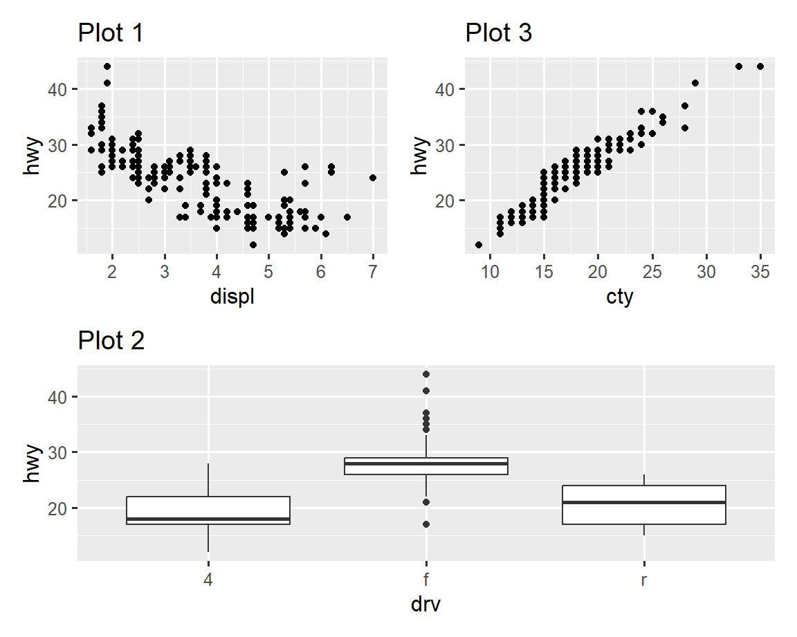
Additionally, patchwork allows you to collect legends from multiple plots into one common legend, customize the placement of the legend as well as dimensions of the plots, and add a common title, subtitle, caption, etc. to your plots. Below we create 5 plots. We have turned off the legends on the box plots and the scatterplot and collected the legends for the density plots at the top of the plot with & theme(legend.position = "top"). Note the use of the & operator here instead of the usual +. This is because we’re modifying the theme for the patchwork plot as opposed to the individual ggplots. The legend is placed on top, inside the guide_area(). Finally, we have also customized the heights of the various components of our patchwork – the guide has a height of 1, the box plots 3, density plots 2, and the faceted scatterplot 4. Patchwork divides up the area you have allotted for your plot using this scale and places the components accordingly.
p1 <- ggplot(mpg, aes(x = drv, y = cty, color = drv)) +
geom_boxplot(show.legend = FALSE) +
labs(title = "Plot 1")
p2 <- ggplot(mpg, aes(x = drv, y = hwy, color = drv)) +
geom_boxplot(show.legend = FALSE) +
labs(title = "Plot 2")
p3 <- ggplot(mpg, aes(x = cty, color = drv, fill = drv)) +
geom_density(alpha = 0.5) +
labs(title = "Plot 3")
p4 <- ggplot(mpg, aes(x = hwy, color = drv, fill = drv)) +
geom_density(alpha = 0.5) +
labs(title = "Plot 4")
p5 <- ggplot(mpg, aes(x = cty, y = hwy, color = drv)) +
geom_point(show.legend = FALSE) +
facet_wrap(~drv) +
labs(title = "Plot 5")
(guide_area() / (p1 + p2) / (p3 + p4) / p5) +
plot_annotation(
title = "City and highway mileage for cars with different drive trains",
caption = "Source: https://fueleconomy.gov."
) +
plot_layout(
guides = "collect",
heights = c(1, 3, 2, 4)
) &
theme(legend.position = "top")![Five plots laid out such that first two plots are next to each other. Plots three and four are underneath them. And the fifth plot stretches under them. The patchworked plot is titled "City and highway mileage for cars with different drive trains" and captioned "Source: https://fueleconomy.gov". The first two plots are side-by-side box plots. Plots 3 and 4 are density plots. And the fifth plot is a faceted scatterplot. Each of these plots show geoms colored by drive train, but the patchworked plot has only one legend that applies to all of them, above the plots and beneath the title.](communication_files/figure-html/unnamed-chunk-39-1.png)
If you’d like to learn more about combining and layout out multiple plots with patchwork, we recommend looking through the guides on the package website: https://patchwork.data-imaginist.com.
12.6.1 Exercises
What happens if you omit the parentheses in the following plot layout. Can you explain why this happens?
p1 <- ggplot(mpg, aes(x = displ, y = hwy)) + geom_point() + labs(title = "Plot 1") p2 <- ggplot(mpg, aes(x = drv, y = hwy)) + geom_boxplot() + labs(title = "Plot 2") p3 <- ggplot(mpg, aes(x = cty, y = hwy)) + geom_point() + labs(title = "Plot 3") (p1 | p2) / p3Using the three plots from the previous exercise, recreate the following patchwork.
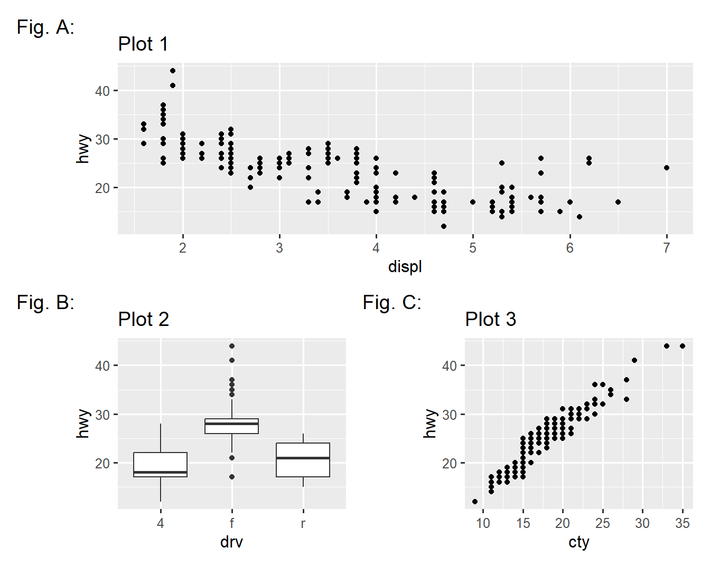
12.7 Summary
In this chapter you’ve learned about adding plot labels such as title, subtitle, caption as well as modifying default axis labels, using annotation to add informational text to your plot or to highlight specific data points, customizing the axis scales, and changing the theme of your plot. You’ve also learned about combining multiple plots in a single graph using both simple and complex plot layouts.
While you’ve so far learned about how to make many different types of plots and how to customize them using a variety of techniques, we’ve barely scratched the surface of what you can create with ggplot2. If you want to get a comprehensive understanding of ggplot2, we recommend reading the book, ggplot2: Elegant Graphics for Data Analysis. Other useful resources are the R Graphics Cookbook by Winston Chang and Fundamentals of Data Visualization by Claus Wilke.
You can use a tool like SimDaltonism to simulate color blindness to test these images.↩︎
Many people wonder why the default theme has a gray background. This was a deliberate choice because it puts the data forward while still making the grid lines visible. The white grid lines are visible (which is important because they significantly aid position judgments), but they have little visual impact and we can easily tune them out. The gray background gives the plot a similar typographic color to the text, ensuring that the graphics fit in with the flow of a document without jumping out with a bright white background. Finally, the gray background creates a continuous field of color which ensures that the plot is perceived as a single visual entity.↩︎